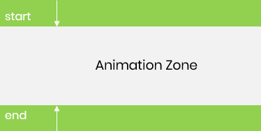
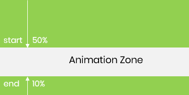
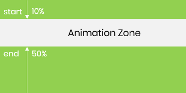
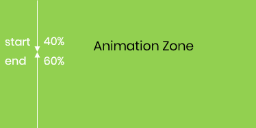
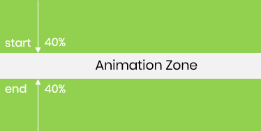

animation-timeline: none | auto | scroll() | view();
| item | desc |
|---|---|
| animation-timeline | none | auto | scroll() | view() |
| animation-range | 复合属性；动画范围；默认 0 100% |
| animation-range-start | 动画开始范围；默认 0 |
| animation-range-end | 动画结束范围；默认 100% |
animation happens only when the element is visible on the screen
by default, the timeline is at 0% when the subject is first visible at one edge of the scroller
and 100% when it reaches the opposite edge.
animation-timeline: view(start end);
The scroller and inset values can be specified in any order.

While scrolling down, start at 10% from the bottom and finish at 50% from the top
Conversely, scrolling up, the animation proceeds in the reverse direction, starting at 50% from the top, moving backward through the animation, and ending at 10% from the bottom




@property --radial-progress {
syntax: "<number>";
inherits: true;
initial-value: 0;
}
因为要兼顾计数器的 0 - 100 和圆周的 0 - 360deg
@keyframes radialProgress {
from {
--radial-progress: 0;
}
to {
--radial-progress: 1;
}
}
动画时间由视口决定，所以 1ms 可以移除
animation: radialProgress 1ms ease-out forwards; animation-timeline: view(30% 10%);
background:
conic-gradient(
#8b5cf6 0deg calc(var(--radial-progress) * 360deg),
transparent 0);
counter-reset: per calc(var(--radial-progress) * 100);
@keyframes --windmill {
from {
transform: rotate(0deg);
}
to {
transform: rotate(360deg);
}
}
.windmill {
animation-name: --windmill;
animation-timing-function: linear;
animation-timeline: scroll();
}
.windmill {
animation-name: --windmill;
animation-timing-function: linear;
animation-timeline: scroll(root);
}